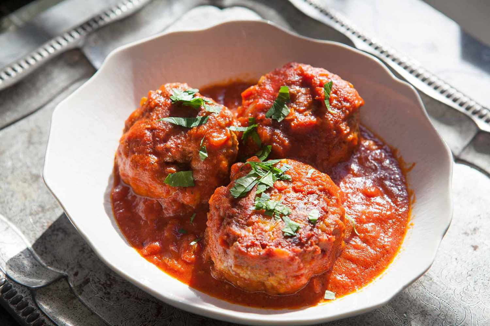

<html></html>
<head>
    <title>Flavor Fusion</title>
    <meta name="viewport" content="width=device-width, initial-scale=1">
    <link rel="stylesheet" href="recipesty.css">
    <link rel="stylesheet" href="https://fonts.googleapis.com/css?family=Zain|ABeeZee|Inter">
</head>
<body>
    <div class="header">
        <h1>Flavor Fusion</h1>
    </div>
    <div class="navbar">
        <ul>
            <li><a href="frontpage.html">Home</a></li>
            <li><a href="category1.html">Appetizers</a></li>
            <li><a href="category2.html">Main Courses</a></li>
            <li><a href="category3.html">Desserts</a></li>
        </ul>
    </div>
    <div class="name">
        <p style="font-size: 250%;">Party Meatballs</p>
    </div>

    <div class="scrolling-gallery">
        
        
        
        
    </div>

    <div class="desc">
        <div class="descinfo">
            <p>
                The best thing about these meatballs, besides the flavor of course, 
                is that I can make them ahead of time, bake them and then pop them in the freezer. 
                They'll thaw as they simmer away in the sauce. For ease, I use my favorite store-bought brand, 
                but if you have a favorite homemade sauce, feel free to substitute that instead.
            </p>
        </div>

        <div class="time">
            
            <br> Total Time: 45 min
        </div>

        <div class="flip-card">
            <div class="flip-card-inner">
              <div class="flip-card-front">
                
                <br>
                Nutritional information
              </div>
              <div class="flip-card-back">
                <p>
                    Serving size: 1 of 14<br>
                    Calories: 299<br>
                    Total fat: 18g<br>
		            Carbs: 12g<br>
		            Sugar: 6g<br>
                    Protein: 22g<br>
		            Cholesterol: 91mg<br>
                    Sodium: 747mg<br>
                </p>
              </div>
            </div>
          </div>
        
    </div>

    <div class="bottom">
        <div class="ingredients">
            <h2 style="text-align: center;">Ingredients</h2>
            <hr class="divider" style="width: 70%">
            <div class="checkbox">
                <form>

                    <p>
                        <input type="checkbox" name="ingredients" class="strikethrough">
                        <label>1 cup panko breadcrumbs<br></label>
                    </p>

                    <p>
                        <input type="checkbox" name="ingredients" class="strikethrough">
                        <label>1/4 cup whole milk<br></label>
                    </p>

                    <p>
                        <input type="checkbox" name="ingredients" class="strikethrough">
                        <label>1 pound ground chuck<br></label>
                    </p>

                    <p>
                        <input type="checkbox" name="ingredients" class="strikethrough">
                        <label>1 pound ground veal<br></label>
                    </p>

                    <p>
                        <input type="checkbox" name="ingredients" class="strikethrough">
                        <label>1 pound ground hot Italian sausage<br></label>
                    </p>

                    <p>
                        <input type="checkbox" name="ingredients" class="strikethrough">
                        <label>1/2 cup grated Parmesan<br></label>
                    </p>

                    <p>
                        <input type="checkbox" name="ingredients" class="strikethrough">
                        <label>2 tablespoons chopped fresh parsley<br></label>
                    </p>

                    <p>
                        <input type="checkbox" name="ingredients" class="strikethrough">
                        <label>1 tablespoon garlic powder<br></label>
                    </p>

                    <p>
                        <input type="checkbox" name="ingredients" class="strikethrough">
                        <label>1 teaspoon kosher salt<br></label>
                    </p>

                    <p>
                        <input type="checkbox" name="ingredients" class="strikethrough">
                        <label>1/2 teaspoon freshly ground black pepper<br></label>
                    </p>

                    <p>
                        <input type="checkbox" name="ingredients" class="strikethrough">
                        <label>1/4 teaspoon grated nutmeg<br></label>
                    </p>

                    <p>
                        <input type="checkbox" name="ingredients" class="strikethrough">
                        <label>2 large eggs<br></label>
                    </p>

                    <p>
                        <input type="checkbox" name="ingredients" class="strikethrough">
                        <label>Two 24-ounce jars marinara sauce<br></label>
                    </p>

                    
                </form>
             </div>
        </div>        

        <div class="instructions">
            <h2 style="text-align: center;">Instructions</h2>
            <hr class="divider">
            <div class="steps">
                <ol type="1">
                    <li>Preheat the oven to 425 degrees F. Line a large rimmed baking sheet with parchment paper.</li><br>
                    <li>Combine the panko and milk in a small bowl. Let stand until the liquid is absorbed, about 5 minutes. (The mixture should form a paste.)</li><br>
                    <li>Gently combine the breadcrumb mixture, chuck, veal, sausage, cheese, parsley, garlic powder, salt, pepper, nutmeg and eggs in a large bowl. Be careful not to overmix.</li><br>
                    <li>Use a small cookie scoop to shape the mixture into forty 1 1/2-inch balls. Place the meatballs 1/2-inch apart on the prepared baking sheet. Bake until the meatballs are cooked through, about 20 minutes.</li><br>
                    <li>Meanwhile, heat the marinara sauce in a large Dutch oven over medium heat. Remove the meatballs from the baking sheet and add to the simmering sauce.</li><br>

                </ol>
            </div>
        </div>
    </div>
</body>
</html>